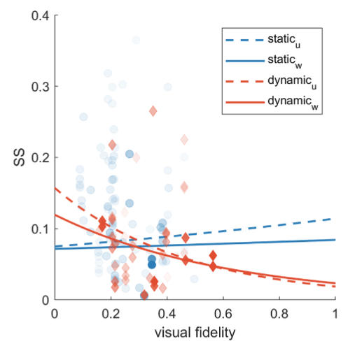

A meta-analysis of simulator sickness as a function of simulator fidelity


Authors. Ksander N. de Winkel, Tessa M. W. Talsma, Riender Happee
Venue. Exp Brain Res (2022)
Abstract. Driving simulators are an increasingly important tool to develop vehicle functionalities and to study driver or passenger responses. A major hindrance to the use and validity of such studies is Simulator Sickness (SS). Several studies have suggested a positive relation between improvements in simulator fidelity and the likelihood of sickness. We hypothesized that this relation only holds true for static (fixed-base) simulators, and that increased fidelity in fact reduces simulator sickness in dynamic (moving-base) simulators. We performed a meta-analysis investigating the relation between sickness and fidelity in static and dynamic systems. A literature search yielded a total of 41 simulator studies that varied aspects of mechanical and/or visual fidelity and assessed SS for the same driving conditions and the same or equivalent participant groups. Evaluation of a model synthesizing the findings of these studies indicates that SS decreases with visual fidelity, and suggests that this effect may be negated for static simulators. The results of the modeling efforts thereby provide some support for the hypothesis that increased fidelity can reduce SS in dynamic simulators. Based on the evaluation of the literature we also note particular shortcomings and gaps in available research. Finally, we make recommendations for specific experiments that may fill these gaps and allow definitive conclusions on the role of simulator fidelity in SS.